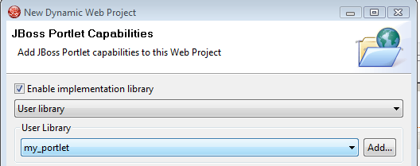

JBoss Tools Portlet
Portlet runtime validation
Portlet wizards uses a new mechanism for setting up libraries and verifying wether the runtime supports the functionallity.
If a runtime does not support Portal the portal functionallity will not be available. If you want it to show no matter what the runtime support you can go to XYZ.
